零基礎入門指南
這個病毒是什麼、我們怎樣讀它的 genome(基因組)、以及這個項目到底量度了什麼 —— 不預設任何病毒學背景。
在任何基因組分析說得通之前,你需要先知道 RSV 到底是什麼。
病毒不是細胞,按一般定義也不算活著。它是一包被蛋白質包裹的遺傳指令,自己什麼都做不到 —— 沒有產生能量的方法,也沒有製造蛋白質的機器。放在枱面上,它就只是靜靜躺著。
它唯一能做的,是進入一個活細胞,然後把自己的指令交出去。細胞本身的機器會讀這些指令,製造出新的病毒顆粒,通常犧牲掉細胞原本該做的工作。最後細胞釋放或破裂,新顆粒再去感染其他細胞。
遺傳指令有兩種形式。有些病毒用 DNA(去氧核糖核酸),跟你自己的基因是同一種分子;另一些用 RNA(核糖核酸),一種很相近的分子。RSV 屬於 RNA 病毒。
這一點比聽起來重要:複製 RNA 的酵素比複製 DNA 的出錯率高得多。所以 RNA 病毒突變得很快,這也是它們能夠一季一季地改變的原因。
RSV(呼吸道合胞病毒)全寫是 Respiratory Syncytial Virus。「Respiratory(呼吸道)」是因為它感染氣道;「Syncytial(合胞)」是因為被感染的細胞會融合成一團多核的大細胞,叫做 syncytium(合胞體),這是它對組織做的一件很有辨識度的事。
它極之常見。基本上每個小朋友兩歲前都會感染過 RSV,而且因為對它的免疫力維持不久,人一生中會重複感染。健康成人感染起來像一場重感冒;但對嬰兒、長者和免疫力弱的人,它可以造成 bronchiolitis(細支氣管炎)和肺炎,是全球嬰兒住院的主要原因之一。
所以 RSV 並不是什麼罕見的病毒。它是一個長期存在於人類社會、非常普通的病毒 —— 這一點請記住,因為它最後會成為理解本項目結果的關鍵。
RSV 顆粒大致呈球形,也會形成長絲狀。由外到內分三層。
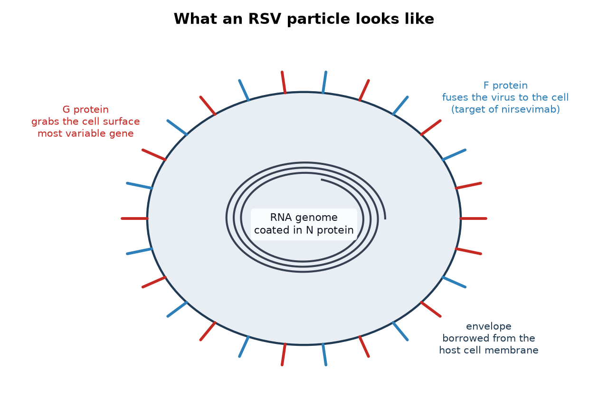
最外層是 envelope(包膜),一層油脂膜,是病毒離開上一個細胞時「順手帶走」的。膜上插著蛋白質突起,其中兩種很重要:G 負責抓住人類細胞的表面,F 則把病毒與細胞的膜拉在一起融合,好讓內容物送進去。
裡面是基因組,但它從不裸露。整條基因組被大量 N 蛋白包裹,形成一條柔軟捲曲的結構,叫 nucleocapsid(核衣殼)。跟著一起進去的還有病毒一進細胞就要用的酵素。
RSV 的 genome(基因組)是一條大約 15,200 個字母長的 RNA。寫出來就是一串大約 15,200 個字元,來自四個字母的字母表:A、C、G、T。
關於字母的小註
RNA 實際上用 U(尿嘧啶)代替 DNA 的 T(胸腺嘧啶)。但序列資料庫習慣一律用 DNA 字母儲存,所以你從頭到尾都會看到 T,本項目也一樣。論文寫「UpA」而我們寫「TpA」時,指的是同一個東西。
基因組分成十個 gene(基因),每一個是一段編碼一種蛋白質的字母。它們的排列順序永遠相同。
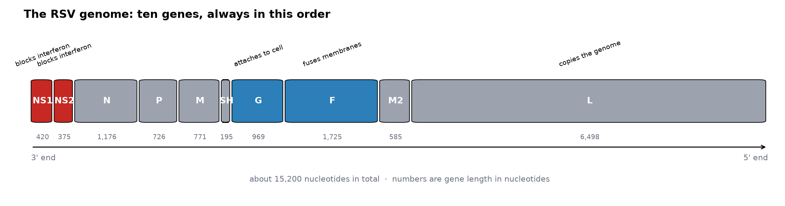
最後那一點值得停下來想一想。如果你計算整個基因組的平均值,L 基因就貢獻了接近一半。一個只發生在 NS1 這種小基因上的真實變化,在全基因組平均值裡幾乎看不見。這正是本項目要逐個基因分開量度的原因。
| 基因 | 長度 | 功能 |
|---|---|---|
| NS1 | 420 | 阻斷 interferon(干擾素),即細胞的抗病毒警報 |
| NS2 | 375 | 同樣阻斷干擾素,與 NS1 配合 |
| N | 1,176 | 包裹整條基因組 |
| P | 726 | 複製酵素的搭檔 |
| M | 771 | 基質蛋白,維持顆粒結構 |
| SH | 195 | 最小的基因,在膜上形成通道 |
| G | 969 | 把病毒黏附到細胞上。變異最快的基因 |
| F | 1,725 | 融合膜。nirsevimab 與疫苗的靶點 |
| M2-1 | 585 | 調控轉錄。M2 其實有兩個重疊的 ORF(M2-1 和 M2-2,重疊 32–35 個鹼基,視亞型而定)。本項目只分析 M2-1 —— 兩個都算的話,重疊那一段會被數兩次。 |
| L | 6,498 | 複製基因組的酵素。遠比其他基因大 |
其中四個在本項目裡反覆出現。
NS1 與 NS2 是病毒對你免疫系統的反擊。當細胞偵測到病毒,它會釋放 interferon(干擾素) —— 一種化學警報,叫鄰近細胞開啟防禦。NS1 和 NS2 會干擾這個訊號,替病毒爭取時間在身體反應過來之前先複製。
G 在外面,所以抗體不斷攻擊它,因此它比任何其他 RSV 基因變得都快。它還有一個特點:某些 lineage 的 G 基因裡多插了 72 個字母,這在把基因組對齊時會造成技術上的麻煩。
F 同樣在外面,但比 G 保守得多,因為它的形狀必須精確才能完成融合。正是這份保守性,令藥廠選它而不是 G 作為靶點。
簡單講一下,因為這個機制解釋了為何有些基因表達得比其他多。
為什麼基因順序重要
因為 L 嚴格由一端開始讀,而且偶爾會掉下來,所以排在前面的基因被轉錄的次數遠多於後面的。NS1 和 NS2 排第一第二,所以在感染早期會被大量製造 —— 剛好合適,因為它們的工作正是在警報響起之前把它關掉。L 排最後,製造量最少,但這沒問題,因為酵素只需要一點點。
RSV 有兩種形式,RSV-A 與 RSV-B。它們很久以前從共同祖先分開,現在在基因上已經明顯不同,雖然造成的疾病一樣。
兩者同時流行,經常是一型主導一兩季之後換另一型。因為它們是分開的演化支線,本項目全程把兩者分開分析;混在一起會把真實的規律模糊掉。唯一把它們放在一起的場合,是互相比較的時候 —— 而結果最有趣的發現剛好就在那裡。
給你一個差異的概念:NS1 基因在 A 型和 B 型之間,字母層面大約只有 78% 相同。即是說大概每五個字母就有一個不同。
在每個亞型之內,RSV 繼續分化。病毒傳播時會累積突變,族群就分裂成一條條分支。每一條有名字的分支就是一個 lineage(譜系)。
Lineage 的名稱是階層式的,每一個點代表一次更細的分支:
所以 A.D.1.5 屬於 A.D.1,而 A.D.1 屬於 A.D。如果你覺得這跟疫情期間 SARS-CoV-2 用的 Pango 命名很像,那是因為兩者用的是同一套概念。
Lineage 不是永久的。一個新的出現、擴散、主導幾季,然後被另一個取代。這種不斷的更替是第三部分的核心,因為它可以在數據裡造出看似演化、其實不是的規律。
RSV 有很強的 seasonality(季節性)。在溫帶國家,它秋末來、冬天高峰、春天消退。南半球同樣的規律相差半年,所以全球任何時候都有某處在 RSV 季節。
有兩件歷史事件在任何 RSV 數據集裡都看得很清楚:
直到最近,基本上沒有辦法。2023 年起有兩種方式,兩者都針對 F 蛋白:
因為這些都針對 F,F 基因的任何變化現在都有直接的臨床意義。這正是本項目最有希望的下一步,見第 33 節。
本項目量度的每一樣東西,都是字母本身的性質。以下逐個解釋。
對我們而言,一個 RSV 基因組就是一串大約 15,200 個字元:
在硬碟上它真的就只是這樣。接下來做的全部事情,都是在這串文字裡數數和比較。你不需要實驗室,只需要文字和一部電腦 —— 這正是這類研究的門檻低的原因。
序列用一種叫 FASTA 的格式儲存:一行以 > 開頭的標題行,下面跟著字母。
醫院從病人身上採樣,抽出病毒的 RNA,送進定序儀。結果連同樣本資料 —— 採集日期、國家、宿主、所屬 lineage —— 一起上載到共用資料庫。
RSV 和流感用的資料庫是 GISAID。它本來為流感監測而建,後來擴展到其他病毒。使用它要同意一份限制轉發的條款,所以本項目的程式碼庫裡完全沒有任何序列,只有程式碼和匯總結果。
這批數據是什麼,不是什麼
這是 surveillance data(監測數據),不是設計好的研究。沒有人挑選過一個平衡的樣本,它只是各個實驗室剛好定序並上載的東西,而這取決於經費、設備和國家政策。歐洲的比重嚴重偏高;有些國家要買了定序儀之後才出現在數據裡。任何隨時間出現的規律,都可能有一部分只是「誰在定序」的規律。把這種偏差當成任何結果的預設解釋,是這個領域裡最有用的習慣。
要在幾萬個基因組之間比較同一個基因,你得知道每個基因在每條序列裡從哪裡開始、到哪裡結束。你不能直接用固定位置,因為基因組長度不一 —— 有些有插入,有些有缺失。
做法是用一條 reference genome(參考基因組):一條研究得很透徹、已經標註好十個基因邊界的基因組。其他所有基因組都跟它對齊,這個過程叫 alignment(序列比對),然後把基因邊界對應過去。
本項目用 MAFFT 做比對,每個亞型用一條來自公開 NCBI 資料庫的參考序列。有一個細節必須做對:比對時保留插入片段而不是把它剪掉。某些 RSV lineage 的 G 基因裡多了那 72 個字母,粗心的比對會默默把它切走 —— 剛好毀掉我們最關心的基因。我們檢查過:G 基因得出 969 個字母,而參考序列是 897 個,正好是參考長度加上那段已知的 72 字母重複。
最簡單的量度。數一數有多少個字母是 G 或 C,除以總數。
RSV 大約是 0.33,即是說大概三分之一的基因組是 G 或 C,三分之二是 A 或 T。不同生物、不同病毒的數值差很遠,而同一條基因組之內也會逐個基因不同。
定序失敗的位置會標成 N。我們直接跳過這些位置而不是去猜,所以它們不會扭曲計數。
Dinucleotide(二核苷酸)就是相鄰的一對字母。讀 ACGT 會得到三對:AC、CG、GT。
這個領域最關心的一對,是一個 C 緊接著一個 G,寫作 CpG。中間那個「p」指的是兩者之間的化學鍵,它的作用是講清楚我們指的是同一條鏈上前後相鄰的兩個字母。
如果你已經在人類遺傳學裡學過 CpG
你可能是在 DNA methylation(DNA 甲基化)、CpG island(CpG 島)和基因啟動子的脈絡下認識 CpG 的。那些在這裡完全不適用。RNA 病毒不會那樣被甲基化,也沒有 CpG island。CpG 對病毒之所以重要,原因完全不同,在第 18 節解釋。公式一樣,生物學不一樣。
本項目追蹤五對:CpG、GpC、GpG、CpC(論文所用的四對),再加上 UpA。
UpA 不是「對照組」
很容易以為 UpA 加進來是當對照用的。不是。真正的對照是 GpC 和 ApU —— 把字母次序倒轉,鹼基組成完全不變的那一對。實驗上把它們調高,病毒複製不受影響(Goonawardane 等,2021)。論文用的 GpC、GpG、CpC 正是扮演這個角色。
UpA 剛好相反:它是除了 CpG 以外,唯一有實驗證據會壓制 RNA 病毒複製的 motif,而且走的是另一條辨識路徑。把它放進來不是為了「湊數」,而是因為它能回答一個 GpC 答不了的問題:RSV 身上的壓力,是專門針對 CpG,還是「凡是會被免疫系統看見的 motif 都一起被壓低」?第 18 節有答案。
直接數 CpG 會誤導人。一條 G 和 C 很多的基因組,單憑機率就會含有更多 CpG。要問病毒是不是主動迴避這一對,你必須跟「純粹靠機率會出現多少」比較。
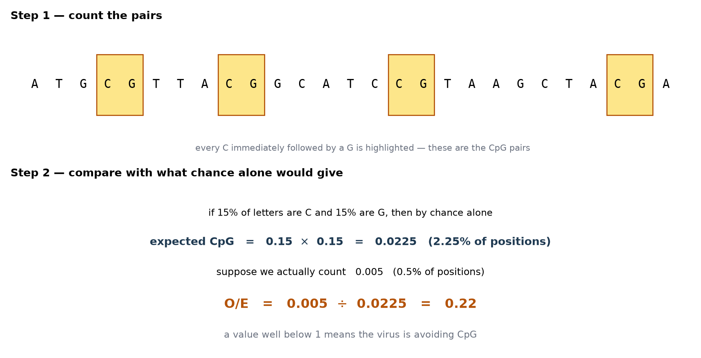
計算方式是:
解讀方式:
RSV 的 CpG O/E 大約是 0.24。這是很強的壓抑:病毒只帶著它自身鹼基組成所預測的四分之一左右的 CpG。另外三對含 GC 的二核苷酸都接近或高於 1.0,所以這是 CpG 專有的現象,而不是整體缺乏 G 和 C。
編碼蛋白質的區域是每三個字母一組來讀。每一組三字母叫一個 codon(密碼子),指定一個 amino acid(氨基酸),即組成蛋白質的建築材料。
遺傳密碼是冗餘的:同一個氨基酸常常有好幾個密碼子可以表示,而它們通常只差在第三個字母。GCT、GCC、GCA、GCG 全部都代表 alanine(丙氨酸)。
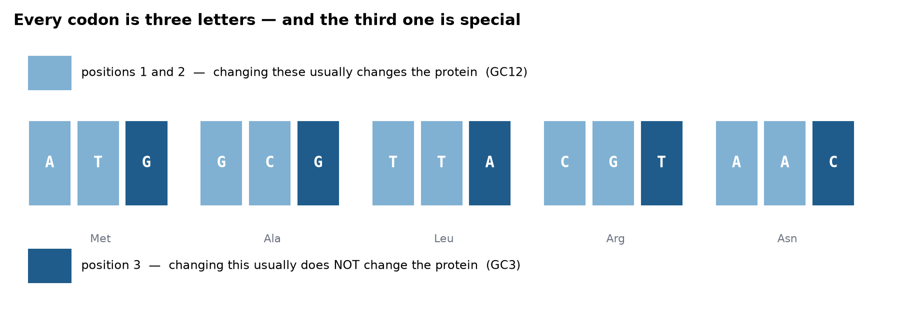
這給了我們兩個很有用的量度:
為什麼這個比較威力很大
如果成分在 GC3 變得快、在 GC12 變得慢,那麼造成變化的東西是作用在 RNA 分子本身,而不是蛋白質 —— 因為它只改動了蛋白質不在乎的字母。如果兩者一起動,那蛋白質多半有份。這是本項目最鋒利的工具,而流感那篇論文最清晰的結果正是由它得出:GC3 下降的速度比 GC12 快約 5.65 倍。
那麼,病毒為什麼要迴避某一對特定的字母?
人類細胞裡有一種蛋白叫 ZAP(zinc-finger antiviral protein,鋅指抗病毒蛋白)。ZAP 會特異地結合到病毒 RNA 的 CpG 位點上,並標記那段 RNA 讓它被銷毀。實際效果是:病毒基因組裡每一個 CpG,都是免疫系統可以抓住它的把手。
結果就是,長期在人類之間流行的病毒,往往帶著比機率應有更少的 CpG。它們在漫長歲月裡,把把手一個個銼掉了。這一點有實驗證據:當研究人員刻意在流感基因組裡加入額外的 CpG,病毒複製得更差,而且引發更強的免疫反應。
CpG 不是唯一會被壓低的 motif。UpA(一個 U 接一個 A;在 DNA 字母裡寫作 TpA)在大多數 RNA 病毒裡同樣被壓抑,而且它的證據跟 CpG 一樣來自實驗,不是純粹觀察:
本項目在 RSV 身上看到什麼
把兩個 motif 擺在一起看,RSV 的答案非常乾淨:
| Motif | RSV-A 的 O/E | RSV-B 的 O/E | 解讀 |
|---|---|---|---|
| CpG | 0.236 | 0.242 | 只剩機率應有的四分之一 —— 極度壓抑 |
| UpA | 0.898 | 0.899 | 只低約 10% —— 幾乎正常 |
| GpC | 1.007 | 1.095 | 約等於 1,對照成立 |
| GpG | 1.055 | 0.984 | 約等於 1,對照成立 |
| CpC | 1.069 | 1.027 | 約等於 1,對照成立 |
結論:RSV 身上的壓力是針對 CpG 的,不是針對「所有會被看見的 motif」。如果是後者,UpA 應該也掉到 0.5 以下,但它沒有。這個對比正好指向一條像 ZAP 那樣只認 CpG 的路徑,而不是籠統的 RNA 降解。這是一個 GpC 給不了的訊息 —— 這正是把 UpA 留下來的價值。
(另外:UpA 的 O/E 在 A 和 B 之間幾乎一模一樣,0.898 對 0.899;而 CpG 在個別基因之間可以差十二倍。所以亞型差異也是 CpG 專有的。)
把結論講得準確
ZAP 是這個領域的主流解釋,而且證據相當充分。但請留意,它是對「序列中觀察到的規律」的一個解釋。本項目觀察到規律,但沒有證明機制。要證明 ZAP 在 RSV 裡真的負責,需要實驗室工作 —— 把 CpG 位點放回病毒裡,再量度它在有 ZAP 的細胞裡是否比在沒有 ZAP 的細胞裡長得差。寫報告時值得把這點講清楚。有趣的是,我們參照的那篇流感論文其實並沒有提到 ZAP,它只引用了 CpG 的實驗研究而沒有指名機制。
四個統計概念,每一個都改變了這個項目的做法。
要問某樣東西有沒有隨時間改變,你把量度值對日期畫出來,然後穿過這些點擬合一條直線。那條線的 slope(斜率)就是答案:每年改變多少。
正斜率代表上升,負的代表下降,接近零代表沒有趨勢。本項目的斜率大約是每年 0.0001,十年下來約等於零點一個百分點。很小。
斜率旁邊還有 R²,它說明這條線實際上解釋了多少散佈,數值由 0 到 1。一個斜率可以是真的,但如果點散得很開,R² 仍然可以很小 —— 而我們看到的正是這種情況。
由數據算出來的斜率是一個估計值,不是事實。95% confidence interval(95% 信賴區間)是與數據相符的數值範圍。如果這個範圍包含零,你就不能排除「其實沒有趨勢」。
數據越多、時間跨度越長,信賴區間就越窄。這就是為什麼本項目必須小心挑選要納入哪些 lineage:一個只觀察了五年、只有 200 條基因組的 lineage,算出來的斜率不確定到沒有用。
p-value(p 值)只回答一個很窄的問題:假如其實完全沒有效應,你看到這麼強的規律的機率有多大?p 值小代表「大概不只是碰巧」。
問題在於 p 值取決於樣本大小。有 33,000 條基因組時,幾乎任何差異 —— 無論多微小、多沒意義 —— 都會顯示為高度顯著。
請記住這條規則
在這個樣本量下,p 值只告訴你某個效應不是雜訊。它不告訴你這個效應重要。要判斷重要性,看效應的大小,以及它在各個獨立群組裡是否都指向同一方向。留意流感那篇論文怎樣報告結果:是「每年 −0.064%」,而不是 p 值。
Confounder(混淆因子)是第三個因素,它跟你正在比較的兩者一起變動,造出一個其實並不存在的關聯。
本項目有一個很嚴重的。2015 到 2026 年間,RSV 定序的地理分佈完全改變了:大洋洲在 2015 年提供了 38% 的基因組,到 2026 年只剩 4%;而歐洲由 18% 升到 56%。所以「時間比較晚」同時也意味著「比較可能來自歐洲」。如果歐洲和大洋洲的病毒因為無關的原因而成分不同,一個純粹地理上的差異就會表現成隨時間的趨勢。
解決辦法是把地區當作 covariate(共變量)放進模型,等於是在固定地理的前提下再問一次同樣的問題。我們兩種結果都報告;能挺過這一關的趨勢可信得多。
這一節值得好好理解,因為本項目的早期版本真的在這裡出過錯。
整個族群的平均值可以因為兩個完全不同的原因而移動:
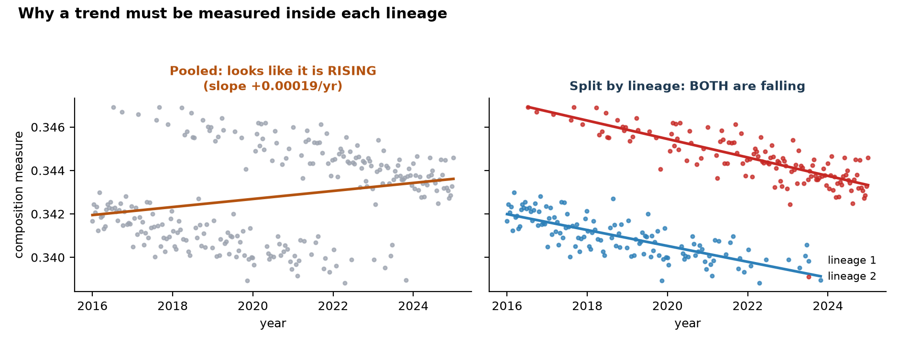
第二種情況會產生一條看起來很有說服力的趨勢線,背後卻完全沒有演化。本項目早期跑的時候正正發生了這件事:把所有數據合併,RSV-B 的 CpG 比值看起來穩定上升;但分開在每個 lineage 之內擬合,它其實在下降。原來是一個高 CpG 的 lineage 取代了一個低 CpG 的。
解決辦法是結構上的而不是統計上的:永遠在每個 lineage 之內分開擬合趨勢,不要用合併的數據。流感那篇論文也是這樣做的,這也是我們判斷這個做法正確的理由之一。
六個步驟、結果、一輪跟進分析(第 33 節),以及對哪些部分真的成功了的誠實交代。每一步都比前面的版本講得更詳細,並收錄「值得知道」的細節。
下面六個步驟按同一個結構來講:先說這一步在做什麼、為什麼需要,再說怎樣做,最後用「值得知道」的方框收錄那些容易被忽略、但會影響你怎樣解讀結果的細節。
| 步驟 | 做什麼 | 關鍵數字 | 代碼在哪裡 |
|---|---|---|---|
| 1 收集基因組 | 從 GISAID 下載、合併八批 | 33,040 條 | notebooks/01_data.ipynb、scripts/merge_gisaid_batches.py |
| 2 品質控制 | 三項檢查,再裁剪時間窗 | 33,038 → 32,442 條 | notebooks/01_data.ipynb、src/rsv/io.py |
| 3 量度成分 | GC、GC3 / GC12、二核苷酸 O/E | 5 對二核苷酸 | notebooks/02_features.ipynb、src/rsv/composition.py |
| 4 切成十個基因 | 對齊參考序列,按座標切 | 363,418 筆記錄 | scripts/build_gene_features.py、src/rsv/genes.py |
| 5 定義 lineage | 截短標籤、篩選、裁剪 | 9 條 lineage | notebooks/03_lineage_trends.ipynb、src/rsv/lineage.py |
| 6 擬合趨勢 | 每條 lineage 之內做迴歸,標準誤分群 | 每個指標 9 個斜率 | scripts/run_lineage_analysis.py |
| 7 跟進分析(第 33 節) | CpG 按密碼子位置分類、固定氨基酸檢驗、HyPhy dN/dS | NS1 比值 0.01 對 0.38 | notebooks/05_codon_followup.ipynb、src/rsv/codon.py |
起點是 2026 年 Ye 等人發表在 Nature Microbiology 的一篇研究。他們量度了 115,520 條流感 A 型病毒基因組的 GC content 和含 GC 的二核苷酸頻率。
流感 A 型天然寄居在野鳥身上。偶爾它會跳到哺乳類身上,然後出現兩種結果之一。通常是 sporadic(零星感染):幾個病例,然後消失。少數情況會變成 sustained(持續傳播),在新宿主裡立足並流行多年 —— 人類季節性流感、豬流感、狗流感全部都是這樣開始的。
他們的發現是:達成持續傳播的那些 lineage,其 GC 含量和 GC 二核苷酸頻率隨時間下降;而且這些 lineage 最早期的病毒在尚未立足之前就已經是那個樣子。這令這個訊號有潛在的預測價值,所以他們提議把它納入大流行風險評估。
這裡的任務,是測試另一個病毒家族裡是否存在類似訊號,從 RSV 開始。問題變成:
研究問題
在每個 RSV lineage 之內,基因組成分如何隨時間改變?RSV-A 和 RSV-B 的規律是否不同?
值得知道:RSV 是個有意義的測試案例,但有一個結構性的限制
論文的核心是把「持續傳播」的 lineage 跟「零星感染」的 lineage 對比。但 GISAID 裡所有 RSV 序列都來自人類,而 RSV 在人類之間已經流行了很久 —— 整份資料只有「持續傳播」這一個類別,沒有零星感染的對照。
所以我們沒辦法複製論文那個對比。能問的只有一個比較窄的問題:在這個早已適應人類的病毒裡,成分還有沒有在朝同一個方向漂移?這也是為什麼預期結果可能是否定的 —— 而一個誠實報告的否定結果,在這裡本身就有資訊價值(第 32 節)。要真的做「持續對零星」,需要另一個病毒家族裡有零星案例的對照組,那是另一個規模大得多的工作。
這一步看似只是「下載檔案」,但它決定了後面所有分析能回答什麼問題,所以值得講清楚。
RSV 序列從 GISAID 分八批下載,按亞型和日期範圍切開,因為資料庫一次能匯出的數量有限。每一批是一個序列檔,加上最多三個獨立的 metadata 表格,要用 accession number(序號)對應起來。
合併後得到 33,040 條基因組:15,458 條 RSV-A 和 17,582 條 RSV-B,採集於 2001 至 2026 年。有六條序列出現在多過一批裡,已去除重複。
每條序列帶著四項我們真正用到的資訊:亞型(A 或 B)、lineage(病毒家族樹上一個有名字的分支,例如 A.D.1.5,第 29 節詳述)、採集日期,以及地區。序列本身放在 FASTA 檔裡,這四項資訊放在另外的 metadata 表格裡,兩邊用 accession ID(序號)對上。那六條重複的序列,正是因為同一個序號在不同批次出現兩次才被發現的。
為什麼分八批?因為 GISAID 一次能匯出的數量有限。為什麼只要「完整、高覆蓋度」的基因組?因為本項目要讀每條序列的每一個位置;缺了一大段的序列,後面所有計算都會被牽連。
值得知道:這不是病例的隨機樣本
GISAID 裡的序列是「有人決定要定序」的病例。定序做多少、在哪裡做、哪一年做,全部隨研究資金、疫情和各國政策而變。本項目量到過兩個後果:定序的地區在單一 lineage 之內也大幅漂移(A.D 由早期 71% 大洋洲變成晚期 36% 歐洲);而且季節性很強,十二月的基因組數是九月的三至四倍。這就是為什麼第 26 節要處理地區、第 30 節把地區當共變量。
值得知道:原始序列不能上傳
GISAID 的數據不能再分發。所以本項目的 GitHub 倉庫只放程式碼、結果表和圖;data/ 整個資料夾都不進版本控制,只有公開的 NCBI 參考序列(data/reference/)例外。要重現分析,必須自己向 GISAID 申請下載。
不是每條上載的序列都可用。我們只保留通過三項檢查的基因組:
| 檢查項目 | 門檻 | 理由 |
|---|---|---|
| 長度 | 14,900–15,400 個字母 | 保留完整基因組,剔除碎片 |
| 模糊字母 | 最多 1% | N 位置會扭曲字母計數 |
| 採集日期 | 必須完整 | 需要用來定位時間 |
33,040 條之中有 33,038 條通過。門檻設得寬鬆,因為下載時已經限定為完整、高覆蓋度的基因組。
三項檢查各自擋住不同的東西。長度擋碎片:RSV 基因組約 15,200 個字母,明顯短於這個的序列缺了一大段。模糊字母擋品質差的序列:定序讀不清的位置會被記成 N,而計算 GC 或二核苷酸時 N 只能跳過,N 越多算出來的數字越不可靠。日期擋沒法放上時間軸的序列 —— 沒有採集日期,整個趨勢分析就用不上它。
被淘汰的那兩條,說明了門檻為什麼這樣設:
之後審視數據時,發現了幾個嚴重到足以改變分析方式的問題:
2026 年尾段不完整。下載是在 2026 年 10 月做的,但序列由採集到上載要幾個月。逐月跟 2025 年同月比較,就能把上載延遲和正常季節性分開:到五月為止,2026 年維持在前一年的 78–93%,五月本身是 92%;然後六月跌到 53%、七月 29%、八月只有 4% —— 同一個月份,2025 年有 399 條,2026 年只有 18 條。那些月份是只由「上載得快的實驗室」貢獻的非隨機樣本。決定:分析窗口訂為 2001 年至 2026 年 5 月底。五月是最後一個仍然維持正常強度的月份,所以在那裡切是最自然的。
更早的數據全部保留。把稀疏的早年數據丟掉很誘人,但樣本量隨時間不均並不會令斜率有偏差 —— 它只是令後期的年份估計得更精確。對某些 lineage 而言,舊數據增加了好幾年的跨度,而如第 20 節所說,跨度越長斜率越精確。B.D.4 這條 lineage 就因此多了接近三年。
但孤立的早期基因組很危險。A.D.3 這條 lineage 本來會因為 2010 年的一條序列而往前多算 6.9 年。一個離其他所有點七年之遠的孤點,對擬合線有極大的槓桿作用。決定:每條 lineage 都裁剪到它真正有被採樣的那段年份,把頭尾少於 5 條基因組的年份丟掉。採樣充分的早期數據會留下來 —— A.D 這條 lineage 頭三年仍然保有 361 條基因組。
地理分佈會漂移,連在單一 lineage 之內也會。第 22 節講的混淆問題,在單條 lineage 內部依然存在 —— A.D 由早期 71% 大洋洲變成晚期 36% 歐洲。決定:把地區當共變量納入,兩種結果都報告。
還有一個問題記錄下來但沒有修正:很強的季節性,十二月的基因組數是九月的三至四倍。
最終分析集:32,442 條基因組,9 條 lineage。
值得知道:QC 通過之後,品質還會不會影響結果?
另外驗證過幾件事。模糊字母極少:每條 lineage 平均只有 0.01–0.07%,而且跟任何成分指標的相關係數都不超過 0.07。日期是真正到日的精度,沒有被填補成「一月一日」之類的假值:1 月 1 日有 123 條,佔 0.4%,跟平均每日的 0.27% 相近,每個月各日的分佈也很平均。
再把只含「零模糊字母」的 66% 基因組單獨重做 36 次擬合(4 個指標 × 9 條 lineage):34 次方向不變,另外 2 次方向相反 —— 但那兩次都是樣本最小的 lineage 裡接近零的斜率(A.D.4 的 GC content、B.D 的 GC3)。把門檻放寬到 0.02% 以下(84% 的基因組)時,36 次的方向全部相同。
結論:品質不是主要結果的混淆因素,但接近零的小 lineage 斜率不穩,不能被過度解讀。
QC 之後,每條基因組要變成一組數字。我們量度四類東西,每一類都有它存在的理由。二核苷酸共五對:論文用的 CpG、GpC、GpG、CpC,再加上 UpA(原因見第 15 和 18 節)。
| 量度 | 怎樣算 | 為什麼要量 |
|---|---|---|
| GC content | (G 的數量 + C 的數量)÷ 有效字母總數 | 最基本的成分指標,流感論文的主角 |
| 二核苷酸頻率 | 該對出現的次數 ÷ 有效的相鄰位置數(長度 − 1) | 看 CpG 這類特定的對有沒有被壓低 |
| O/E 比值 | 實際頻率 ÷(第一個字母頻率 × 第二個字母頻率) | 扣掉 GC 含量的影響,才看得出是不是「主動迴避」(第 16 節) |
| GC3、GC12 | 只數密碼子第三位 / 第一和第二位的 GC | 分辨壓力作用在 RNA 還是蛋白質(第 17 節) |
模糊位置直接跳過:任何碰到 N 的相鄰對都不計入分母。
GC3 和 GC12 需要知道讀框(第 17 節),也就是從哪個字母開始三個三個數。編碼區以外沒有讀框,「第三個密碼子位置」在那裡沒有意義,所以基因組層面的 GC3 / GC12 只用十個編碼區。而且它們是逐條基因、各自在正確的讀框內量度,再按各基因貢獻的位點數合併 —— 而不是把十條基因接成一條長序列再數(原因見下面的方框)。
值得知道:分母是「長度 − 1」,不是「長度 ÷ 2」
算「CpG 佔幾多百分比」時,直覺可能是把序列切成一對一對來數,分母是長度的一半。那會漏掉大約一半的 CpG。CpG 可以從任何一個位置開始,不會乖乖對齊。
例:ACGT 長度 4,它的相鄰對是 AC、CG、GT —— 共 3 個,就是 4 − 1。若用 ÷2 的數法從頭切成 AC、GT,中間的 CG 就消失了。
值得知道:這一步曾經有個程式錯誤,而且改變了一個結果
最初的版本是把十條基因接成一條長序列,再在這條序列上算 GC3 / GC12。問題是:只要任何一條基因的長度不是 3 的倍數(約 4% 的基因組),它後面所有基因的讀框就整體錯位一格,於是「第三位」數到的其實是別的位置。
這個錯位不是隨機雜訊。修正之後,GC3 和 GC12 的斜率最多改變每年 4.7×10⁻⁴,有 3 條 lineage 的 GC3 方向反轉 —— 斜率會變,代表錯位的程度跟採集年份有關(很可能是定序和組裝方法隨年份改變、序列首尾被截短的比例也跟著變,這一點是推測)。舊版據此寫過「GC3 上升、GC12 下降,方向相反」,那個說法已經撤回(第 31 節圖 7)。GC content 和 CpG O/E 完全不受影響,因為它們不依賴讀框。
教訓:凡是依賴讀框的量度,必須在每條基因內部各自計算。
值得知道:為什麼 UpA 在,但不拿它跟 GC 做相關
UpA 不在論文的四對之內,但它是除 CpG 外唯一有實驗證據會壓制 RNA 病毒複製的 motif,而且走另一條辨識路徑(第 18 節),所以保留作對比。但 U 和 A 剛好是 GC content 不數的兩個字母,UpA 跟 GC 的相關係數按定義必然是負的(約 −0.65),毫無資訊,所以第 31 節的相關分析不包含它。
前面的數字是「整條基因組」的。但不同基因的成分差別很大(第 31 節),所以還要把每條基因組切成十個基因,逐個量度。難處在於:不能直接「從第 99 個字母切到第 518 個字母」。每條基因組都有自己的插入和缺失,同一個基因在不同基因組裡的位置會差幾個甚至幾十個字母。所以做法是兩步:
十個基因按它們在基因組上的次序(3′ 到 5′)是 NS1、NS2、N、P、M、SH、G、F、M2-1、L。長度差別很大:
| 基因 | RSV-A 長度 | RSV-B 長度 |
|---|---|---|
| NS1 | 420 | 420 |
| NS2 | 375 | 375 |
| N | 1,176 | 1,176 |
| P | 726 | 726 |
| M | 771 | 771 |
| SH | 195 | 198 |
| G | 897 | 900 |
| F | 1,725 | 1,725 |
| M2-1 | 585 | 588 |
| L | 6,498 | 6,501 |
這是參考序列的長度(以核苷酸計)。L 是 SH 的三十多倍 —— 所以比較不同基因時,必須按長度標準化(用 O/E 或百分比,而不是原始個數)。整個步驟產生了 363,418 筆記錄 —— 33,038 條基因組乘以十一,即十個基因加上每條一筆「全編碼區」的記錄。
值得知道:對齊時刻意保留插入,是為了 G 基因
對齊時沒有強迫每條序列跟參考一樣長。RSV-A 的 ON1 型和 RSV-B 的 BA 型,在 G 基因裡各帶有一段重複的片段(A 型約 72 個、B 型約 60 個字母)。如果把插入丟掉,就等於把這段序列從恰恰是最有特色的那個基因裡拿走。
值得知道:M2 其實有兩個閱讀框,而且曾經被悄悄取錯
參考序列的 M2 基因帶有兩個互相重疊的編碼區:M2-1(A 型 585、B 型 588 個字母)和 M2-2(273 個字母),重疊 32–35 個字母(視亞型而定)。本項目只分析 M2-1:兩個都算的話,重疊那一段會被數兩次。
曾經有個程式錯誤:解析註解檔時,同一個基因名字下有兩個編碼區,程式只悄悄保留第一個,並把它叫作「M2」。數值剛好是對的(第一個就是 M2-1),但名字誤導人。現在程式遇到同名的多個編碼區,會用它們各自的 /product 欄位(「M2-1 protein」)分別命名。
值得知道:還有一個已知的限制
如果一條序列在某個基因的開頭就缺了幾個字母,切出來的那一段不是從密碼子第一位開始,這個基因內部的 GC3 / GC12 就錯位。這只影響那一條基因,不會像舊版接合方式那樣連累後面所有基因。
量度過:長度不是 3 的倍數的序列,NS1 約 2.7%、L 約 2.2%、G 約 0.7%,其餘基因都在 0.1% 以下。要完全堵住這一點,需要加一個「讀框完整」的過濾再重建一次(約 25 分鐘)。
Lineage(譜系)是病毒家族樹上一個有名字的分支。名字是分層的、用點分隔:A.D.1.5 是 A.D.1 裡面的一個子分支,而 A.D.1 又在 A.D 裡面。層級越多,分支越細。
這一步需要一個判斷。完整的 GISAID lineage 標籤太細:大部分只涵蓋約六年、幾百條基因組,而如第 20 節所說,那樣算出來的斜率不確定到不能用。
把標籤截短到三層 —— 即 A.D.1.5 變成 A.D.1 —— 就得到比較少但比較大的群組:
| 標籤層級 | 群組數 | 年份中位數 | 基因組中位數 |
|---|---|---|---|
| 完整標籤 | 59 | 6 | 210 |
| 三層 | 14 | 11.5 | 506.5 |
| 只分亞型 | 3 | 17 | 15,458 |
(表中數字是以通過品質控制的 33,038 條基因組計算;「只分亞型」多出的一組是只有 1 條基因組的 B.Other。三層的 14 組裡,7 組是 RSV-A、7 組是 RSV-B。)
再要求至少 5 年和 200 條基因組,然後裁剪到各自真正被採樣的年份,最後剩下 9 條 lineage(14 組中的 9 組;被淘汰的 5 組共 187 條基因組,只佔 0.6%)—— 六條 RSV-A、三條 RSV-B。9 條合共 32,442 條,是通過品質控制的基因組的 98.2%。跨度由 8.4 年到 14.4 年,而且每一條在頭三年都至少有 31 條基因組,所以沒有任何一條擬合線是建立在一個孤立的早期點之上。
選三層是一個決定,所以整個分析會在四層再跑一次作為檢驗。
值得知道:為什麼一定要在 lineage「之內」分析
整體趨勢可能純粹來自「一個 lineage 取代另一個」,而不是任何一個 lineage 自己在改變 —— 這就是第 23 節講的辛普森悖論。把各 lineage 分開擬合,才能把「取代」排除在趨勢之外。
值得知道:lineage 的層級是分析者的選擇,所以要檢驗它
三層是判斷,不是真理。改成四層(20 條 lineage),CpG O/E 斜率的中位數方向由「略為上升」翻成「下降」(20 條中 15 條為負;三層時 9 條中只有 3 條為負)。方向取決於 lineage 切得多細,代表是切法在驅動結果,而不是生物學。這個檢驗在 notebooks/03_lineage_trends.ipynb 第 3.6 節。
基於第 23 節的理由,每個特徵都是在每條 lineage 之內分開對採集日期做迴歸。日期換算成小數年份,所以 2017 年 7 月 2 日變成約 2017.5 —— 用盡日期的精度而不是只取整年。
每次擬合都跑兩遍:一次直接跑,一次固定地區。
迴歸(第 19 節)給每次擬合三個東西:斜率(每年的變化量)、它的 95% 信賴區間,以及 R²。斜率的單位是「每年」:例如 GC content 的斜率 −1.17×10⁻⁴,代表每年下降 0.0117 個百分點,十年才下降約 0.12 個百分點 —— 非常小。
這是整個分析裡最重要的統計決定,也是最晚才發現的。普通迴歸假設每條基因組都是獨立的觀察。但同一個 lineage 裡的基因組來自同一個祖先,一個 clade 大爆發就會貢獻幾百條幾乎一模一樣的序列 —— 同一件演化事件被數了幾百次(pseudoreplication,偽重複)。後果是標準誤被低估,p 值被壓到不合理地小。
做法是把標準誤按較細的 sub-lineage 分群(比分析用的 lineage 再細兩層);如果一條 lineage 底下少於 3 個 sub-lineage,就改按採集年份分群。分群後標準誤中位數脹大約 6.6 倍。顯著的 lineage 數目因此大幅下降:
| 指標 | 普通迴歸顯著 | 分群後顯著 |
|---|---|---|
| GC content | 7 / 9 | 4 / 9 |
| GC3 | 8 / 9 | 3 / 9 |
| GC12 | 8 / 9 | 1 / 9 |
| CpG O/E | 6 / 9 | 1 / 9 |
這強化了否定結果:連普通迴歸看起來顯著的那些趨勢,大部分在正確處理之後都站不住。
亞型之間的比較要用兩個層次,它們回答不同的問題。每條基因組的層次是描述:這個群體裡實際看到的差距有多大(例如 NS1 的 CpG O/E,B 是 A 的 12.7 倍)。每條 lineage 的層次才是推論:這個差距是不是亞型本身的性質,而不只是某個成功的 clade 造成的。
RSV-A 和 RSV-B 本身就是兩個 clade,所以比較它們接近「比較兩件演化事件」,而不是「比較 15,458 對 17,580 個樣本」。我們因此問:這個差異在每一個獨立 lineage 裡都成立嗎?這裡取 6 條 RSV-A 對 4 條 RSV-B 的 lineage 平均值。十個基因裡,NS1、NS2、P、M、SH、M2-1 這六個兩邊完全不重疊;N、G、F、L 重疊。順帶一提:6 對 4 的 Mann-Whitney 檢驗,即使兩邊完全分開,p 值也只能低到 0.0095,所以這裡報範圍而不報 p 值。
值得知道:A.D.4 的 p 值要特別小心
A.D.4 只有 368 條基因組,底下 sub-lineage 不足 3 個,所以改按年份分群,只有約 10 個群。結果它的 GC content p 值(0.0014)反而比普通迴歸(0.079)更顯著。群組只有十個時,擬合實質上是對年均值做迴歸,估計很不穩。這是九條 lineage 裡唯一一個需要這樣提醒的 p 值。
值得知道:第一次做分群時就做錯了
第一次實作用了常態分佈作為參考分佈:A.D.2 只有 4 個群,卻得到 p = 0.0002。群組這麼少,必須用 t 分佈(自由度 = 群數 − 1),改用之後同一條 lineage 的 p = 0.033。這個陷阱很常見:分群標準誤的理論是為「群數很多」寫的,群數少時要手動修正。
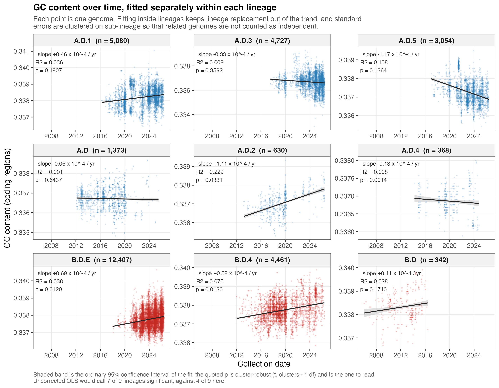
這是核心結果,而它是一個否定的結果。在流感那份研究裡,十二條 lineage 全部朝同一方向。這裡並非如此。
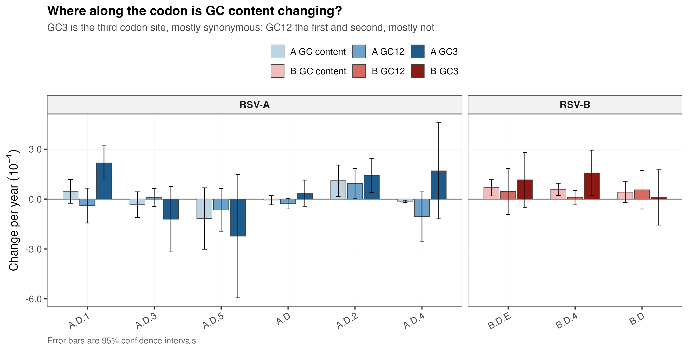
在流感裡兩者都下降,GC3 快約 5.65 倍。RSV 沒有這個特徵:GC3 在 7 條 lineage 上升,GC12 卻是 4 條下降、5 條上升。以平均斜率的絕對值計,GC3 約是 GC12 的 2.65 倍,不到論文的一半。這不是流感的那個特徵,不應該被說成「重現了」它。
這個結果不穩,而且前一版的說法要撤回
前一版寫過「GC3 在 9 條中 6 條上升、GC12 在 9 條中 6 條下降,方向相反」,當成一個有意思的發現。那個說法有一部分來自程式錯誤。GC3 / GC12 當時是在「把十條基因接起來」的序列上量度的。只要任何一條基因的長度不是 3 的倍數(約 4% 的基因組),它後面所有基因的密碼子位置就全部錯位。修正後 GC3 和 GC12 的斜率最多改變了每年 4.7×10⁻⁴,而且有 3 條 lineage 的 GC3 方向反轉 —— 改動斜率本身就證明了這種錯位跟採集年份有關,所以它製造的是假趨勢。現在改成逐條基因、各自在正確的讀框內量度,再按位點數合併。
修正後這個對比仍然不可靠:只用七條很少被截短的基因(N、P、M、SH、NS2、F、M2-1)重算,GC3 只有 7/9、GC12 只有 6/9 的 lineage 保持同一個方向;用 cluster-robust 標準誤後,顯著的只有 GC3 的 3/9 和 GC12 的 1/9。所以最誠實的說法是:RSV 沒有流感那種 GC3 / GC12 的特徵,但「相反方向」本身也不是一個站得住腳的發現。
另一個教訓:當斜率有正有負時,「GC3 斜率總和 ÷ GC12 斜率總和」會除以一個接近零的數(正負抵消),曾經印出 −22 倍這種毫無意義的數字。現在改用平均絕對斜率的比值。
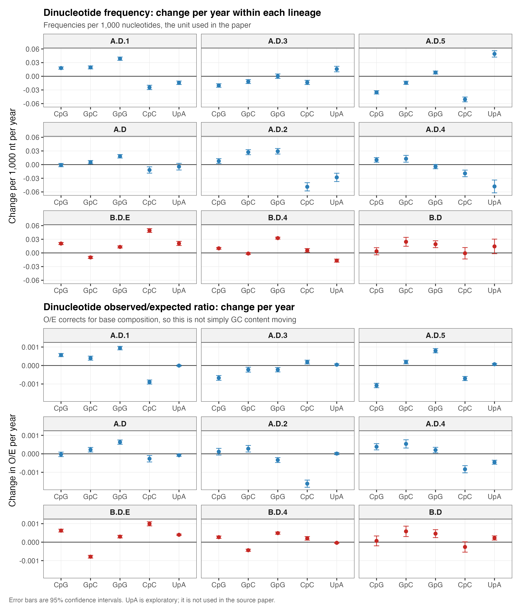
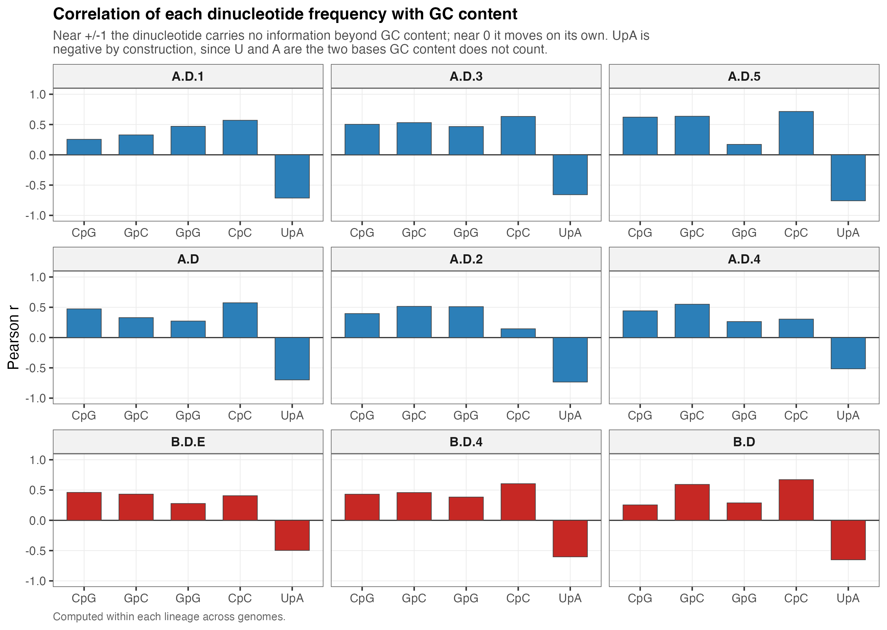
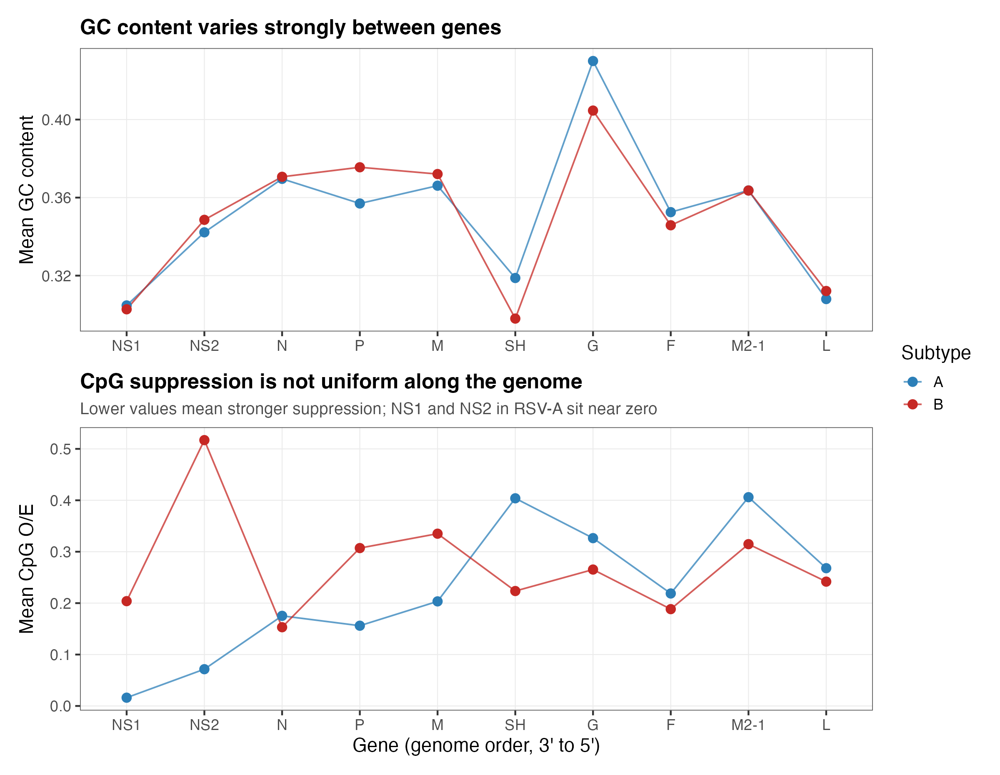
我們用的是同一套量度方法,所以可以一項一項直接比。下表左邊是流感的結果,右邊是 RSV 的。
| 量度項目 | 流感(Ye et al. 2026) | RSV(本項目) | 結論 |
|---|---|---|---|
| Genomic GC content (全基因組 GC 含量) |
12 條 persistent mammalian lineage(持續哺乳類譜系)全部顯著下降(P < 0.01)。最快的 Ca2 是每年 −0.064%,最慢的 Hu2 是每年 −0.006%。 | 9 條 lineage 裡 5 條上升、4 條下降,沒有一致方向。最大的變化量是每年 0.0117%(A.D.5,下降)。 | 未重現 |
| GC3 vs GC12 (第三位 vs 第一、二位) |
兩者同時下降,GC3 比 GC12 快 5.65 倍。 | GC3 在 9 條中 7 條上升,GC12 在 9 條中 4 條下降、5 條上升 —— 沒有共同方向,而且換一組基因就會變,不能當成發現。 | 相反 |
| CpG O/E | 12 條中有 9 條顯著下降(Hu1_2、Hu2–4、Eq、Ca2、Sw1–3)。 | 6 條上升、3 條下降,而且通不過穩健性檢驗:lineage 定義細一層,方向就反轉。 | 未重現 |
| GpG 與 CpC O/E | 多數 lineage 顯著上升。 | 方向同樣不一致。 | 未重現 |
| 二核苷酸頻率與 GC 含量的相關性 | 平均相關係數:CpG 0.72、GpC 0.67、GpG 0.73、CpC 0.59。 | 平均相關係數:CpG 0.43、GpC 0.49、GpG 0.35、CpC 0.51。明顯較弱。 | 較弱 |
換句話說,流感那份研究的三個核心結論,RSV 一個都沒有重現。這不是某一項對不上,而是整套規律都不成立。
這是整件事最值得想清楚的地方。否定結果本身沒什麼好說,但「為什麼是否定的」才是真正的內容。以下五點由最有說服力排到最弱。
一、流感的訊號來自「剛換宿主」,RSV 根本沒有換過
這是最根本的一點。那份研究的 12 條 lineage,全部都是從鳥類跨到哺乳類之後才建立起來的。論文自己的結論就是:降低的 GC 含量可能是達成哺乳類持續傳播的必要條件。也就是說,那個下降趨勢量度的是「適應新宿主的過程」。
人類 RSV 沒有這個過程。它在人類之間已經流行了非常久,早就適應完了。既然沒有轉換,就沒有適應的過程可以量度 —— 找不到趨勢,反而是符合論文邏輯的結果。
二、觀察窗口短太多
Hu1 這條 lineage 由 1918 年一路追到 2010 年,接近九十年。我們最長的一條 lineage 只有 14.4 年,最短的 8.4 年。
用流感最慢那條(Hu2,每年 −0.006%)來算:十年只會累積 0.06% 的 GC 變化。這個量比我們資料裡的雜訊還小。所以即使 RSV 真的有一個同樣緩慢的下降趨勢,用十年的資料也看不出來 —— 這叫 statistical power(統計檢定力)不足。否定結果不等於「確定沒有」,只等於「在這個時間尺度上看不到」。
三、RSV 的 GC 本來就低很多,可能已經「沒得再降」
流感基因組的 GC 含量大約在 43–46% 之間(那篇論文圖 2 的縱軸範圍就是 42–46%)。RSV 只有大約 33.5%,低了十個百分點以上。
如果「降低 GC」真的是適應哺乳類宿主的方向,那 RSV 可能早就走到了底部。一個已經在地板上的東西,量不到它繼續往下掉 —— 這是很自然的。同樣的道理也適用於 CpG —— RSV 的 CpG O/E 大約只有 0.24,壓抑已經非常深了。
四、流感會 reassortment(重配),RSV 不會
流感的基因組分成八段,不同病毒株感染同一個細胞時可以互相交換片段,這叫 reassortment(基因重配)。論文裡最快的兩個下降 —— Hu4 的 PA(每年 −0.142%)和 NP(−0.101%)—— 作者的解釋正是:這兩段是比較近期才從禽流感來的,一開始 GC 含量偏高,跟禽類病毒重疊,之後才一路降下來。
所以流感有一個「反覆注入高 GC 材料、然後慢慢衰減」的機制。RSV 的基因組是單一一條、不分段的,不會重配,也就沒有這種外來高 GC 材料的來源。沒有注入,自然也看不到衰減。
五、效應量本來就小,而且對分析選擇敏感
我們最大的 GC 變化量是每年 0.0117%,大約是流感最快那條(Ca2,每年 0.064%)的五分之一。在這麼小的效應底下,分析上的任何一個選擇都可能左右結論 —— 我們的 CpG 結果就是最好的例子:把 lineage 標籤截短到第四層而不是第三層,中位數方向就反轉了。這說明驅動那個「趨勢」的是分析選擇,不是生物學。
一個誠實的說法
上面五個原因裡,第一和第四是生物學上的理由(RSV 真的不一樣),第二和第五是方法學上的限制(我們可能只是看不到)。第三介乎兩者之間。這兩類原因不能混為一談:前者代表「RSV 不遵守這個規律」,後者只代表「這份資料答不了這個問題」。目前我們無法完全區分這兩者,所以正確的說法是「在可觀察的範圍內沒有看到」,而不是「RSV 沒有這個趨勢」。
時間趨勢分析 —— 也就是主要問題 —— 沒有找到一致的規律:
怎樣看待一個否定結果
RSV 在人類之間已經流行了非常久,早就適應了我們。流感那個結果來自剛剛進入新宿主、還在調整的 lineage。人類 RSV 內部並沒有相應的「轉變」正在發生。所以找不到方向性趨勢是一個合理的生物學結果,而不是分析失敗。一個誠實報告的否定結果,比一個靠挑選「剛好有效的分析方法」得來的肯定結果有價值得多。
它根本不是時間上的,而是基因之間和亞型之間的差異。
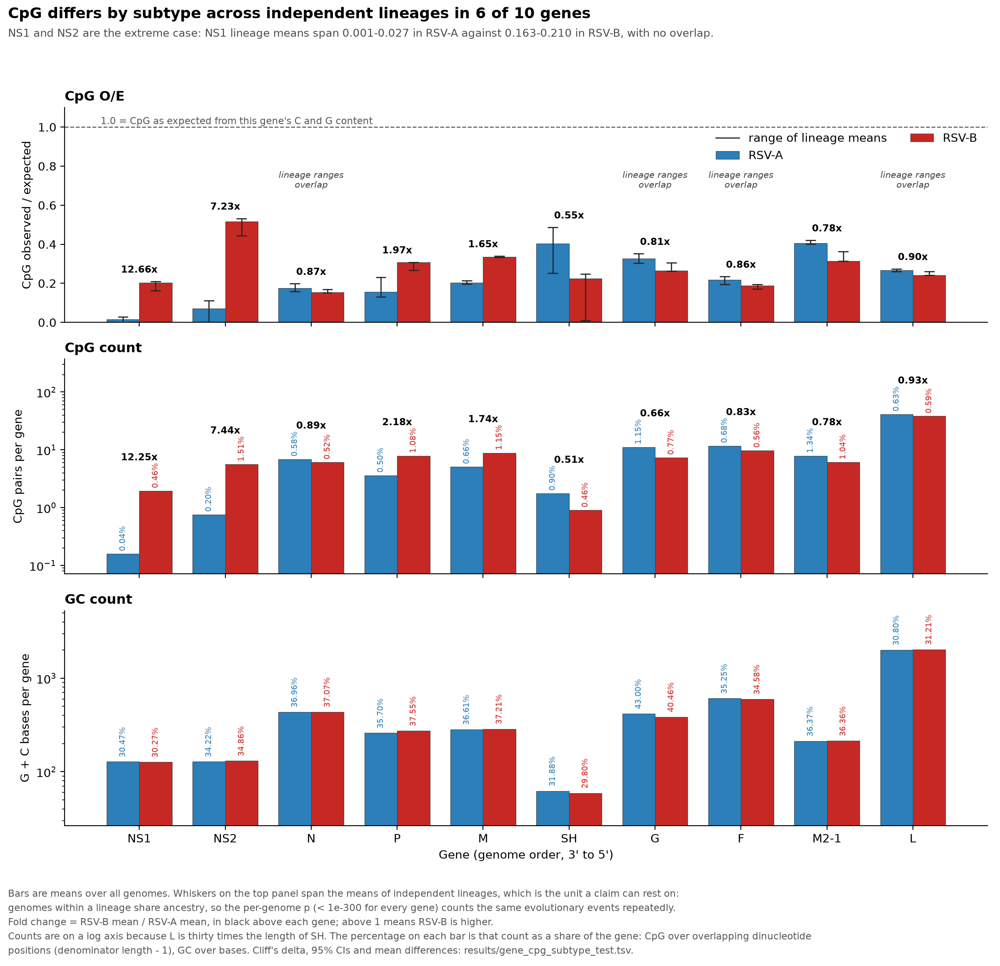
兩個技術問題,值得講清楚
1. 「CpG 佔基因的百分之幾」,分母應該是什麼?
直覺可能是「基因長度 ÷ 2」,即把基因切成一對一對來數。那是錯的,會漏掉大約一半的 CpG。因為 CpG 可以從任何一個位置開始,不會乖乖對齊。正確的分母是重疊的二核苷酸位置數,即「長度 − 1」。
舉例:ACGT 長度 4,它的二核苷酸是 AC、CG、GT —— 共 3 個,就是 4 − 1,而不是 4 ÷ 2 = 2。如果用 ÷2 的數法從第一個位置切下去,會得到 AC、GT,中間那個 CG 直接消失。本項目一直用的是「長度 − 1」。
2. p 值失效的時候,用什麼?
p 值回答的是「這個差異有沒有可能是巧合」。當每組有一萬五千條基因組,答案永遠是「不可能」—— 連 0.89 倍這種微小差距,p 也會細過 1e-300。p 值不會告訴你差異有多大。effect size(效應量)才會。本項目用三個:
三個數字連同 95% 信賴區間都在 results/gene_cpg_subtype_test.tsv。順帶一提:δ 和常見的「共同語言效應量」(隨機一條 B 高過隨機一條 A 的機率)是同一件事換個講法 —— P = (1 − δ) / 2,表裡的 P_B_gt_A 欄就是它。
更根本的問題:33,000 條基因組,其實不是 33,000 個獨立觀察
上面講 p 值失效,理由是「樣本數太大」。其實真正的理由更深一層:這些基因組本來就不互相獨立。
同一個 lineage 裡的基因組來自同一個祖先,是同一場傳播鏈的後代。一個 clade 大爆發,就會貢獻幾百條幾乎一模一樣的序列。統計上把它們當成幾百個獨立觀察,等於把同一件演化事件數了幾百次。標準誤因此被低估,p 值被壓到不合理地小。這個問題有個名字,叫 pseudoreplication(偽重複)。
在本項目量過:把標準誤改成以較細的 sub-lineage 分群(cluster-robust),標準誤平均脹大 6.6 倍,圖 1 的「9 條有 7 條顯著」變成「9 條有 4 條顯著」。A.D.1 的 p 由小於 0.0001 變成 0.18,A.D.3 由小於 0.0001 變成 0.36 —— 兩條都不再顯著。同一個修正套用在其他指標:GC3 由 8/9 變成 3/9,GC12 由 8/9 變成 1/9,CpG O/E 由 6/9 變成 1/9。
還有一個實作上的陷阱:分群數量很少時(一條 lineage 常常只有 4–14 個群),參考分佈必須用 t 分佈(自由度 = 群數 − 1),不能用常態分佈。我第一次實作用了常態分佈,A.D.2 只有 4 個群卻得到 p = 0.0002;改用 t 之後是 0.033。
亞型比較更極端。RSV-A 和 RSV-B 本身就是兩個 clade,比較它們比較接近「比較兩件演化事件」,而不是「比較 15,458 對 17,580 個樣本」。所以正確的做法不是報 p 值,而是問:這個差異在每一個獨立 lineage 裡都成立嗎?答案見上面 —— 十個基因裡只有六個成立,而 NS1、NS2 成立得非常徹底。
(這對本項目的主結論是好消息:趨勢分析本來就是否定結果,而修正之後顯著的 lineage 更少,否定結果更穩。)
| 基因 | A 的 CpG O/E | B 的 CpG O/E | B/A 倍數 | A 的 GC% | B 的 GC% | GC 倍數 |
|---|---|---|---|---|---|---|
| NS1 | 0.016 | 0.204 | 12.7× | 30.47 | 30.27 | 0.99× |
| NS2 | 0.072 | 0.517 | 7.2× | 34.22 | 34.86 | 1.02× |
| P(第三大) | 0.156 | 0.307 | 2.0× | 35.70 | 37.55 | 1.05× |
| N | 0.175 | 0.153 | 0.87× | 36.96 | 37.07 | 1.00× |
| L | 0.268 | 0.242 | 0.90× | 30.80 | 31.21 | 1.01× |
表裡最值得停下來看的是最後三欄:GC 含量那一欄全部是 0.99× 到 1.05×,幾乎沒有分別;CpG 那一欄卻從 0.87× 一路拉到 12.7×。同一條基因、同樣的鹼基組成,CpG 的數量卻差一個數量級。
在 RSV-A 裡,整條 NS1 基因平均只含 0.16 個 CpG 對,而且大約 85% 的 RSV-A 基因組,整條 NS1 裡一個 CpG 都沒有。RSV-B 的同一條基因平均有約 1.94 個。NS2 呈現同樣的規律但較弱。
有四點令這個發現站得住腳:
還有一個細節令它更有力。NS1 在 A 和 B 之間只有約 78% 相同,兩個版本已經分化得相當多。然而 GC content 基本維持不變,CpG 卻差了十二倍。隨機漂移會令兩者一起變動。是某種力量固定了其中一個,同時只在一個亞型裡把另一個壓下去。
文獻檢查的結果
這件事是不是已經有人發表過?後來做了一次比較正式的搜尋(PubMed 加網絡搜尋),沒有找到:
但要小心兩件事。第一,搜尋不到不等於不存在 —— 這個結果可能藏在某篇大型比較基因組學論文裡面沒被特別提出來。第二,現在用這個問題去搜尋,第一個結果就是本項目自己的 GitHub 倉庫,因為它是公開的、已經被搜尋引擎收錄了。這在談「誰先發現」的時候要先知道。
反過來說,有實驗證據支持這個機制在 RSV 身上是說得通的。Liang et al.(2017, J Virol)把 RSV 的 F 基因改成 CpG 較少的版本,結果干擾素反應被削弱、病毒複製和表現量都上升。Meng et al.(2014, mBio)則正好挑中 NS1 和 NS2 這兩個基因做 codon deoptimization(密碼子去最佳化),等於獨立地指出這兩個基因就是功能上最敏感的。這些都是人工改造的實驗,但它們說明:RSV 基因裡的 CpG 數量確實會影響免疫偵測,不只是統計上的數字。
這個問題值得問,因為我們的發現正是兩個亞型之間的差異。答案是:沒有直接的對應,但有結構上相同的比較。
那 12 條 lineage 裡有四條是人類的:Hu1(1918 年的 H1N1)、Hu2(H2N2)、Hu3(季節性 H3N2,41,978 條基因組)和 Hu4(2009 大流行 H1N1,26,452 條)。其中 Hu3 和 Hu4 是現在同時在人類之間流行的 —— 這跟 RSV-A 與 RSV-B 的關係完全一樣。
論文確實報告了這兩條表現不同,而且它給的解釋不是宿主生物學,而是來源歷史:整份研究中下降最快的就是 Hu4 的 PA(每年 −0.142%)和 NP(−0.101%),作者認為原因是這兩段比較近期才從禽流感來,起點的 GC 含量本來就高。
這對我們的發現意味著什麼
論文自己處理「同一個宿主裡兩條共同流行的譜系為何不同」時,訴諸的是演化歷史,不是當下的選擇壓力。那麼同樣的解釋也可能適用於 NS1/NS2:RSV-A 和 RSV-B 很久以前就分家了,這個十二倍的差異可能只是一個凍結下來的歷史偶然,而不是正在發生的選擇。
這是這個發現最需要先排除的替代解釋,而且有一個直接的檢驗方法:看 RSV-A 的 NS1 CpG 在各 lineage 之內是不是「還在下降」。如果還在降,代表壓力仍然在作用;如果整段觀察期都已經貼近零,那就比較像是早就固定下來的狀態。
趨勢分析是否定結果,唯一的發現是 RSV-A 的 NS1/NS2 CpG 遠比 RSV-B 少。跟導師討論之後,決定先把這個發現追問下去:它是蛋白質的限制,還是作用在 RNA 上的壓力?這一節就是答案的第一輪,全部在 notebooks/05_codon_followup.ipynb。
| 步驟 | 做什麼 | 關鍵數字 | 代碼在哪裡 |
|---|---|---|---|
| A 查宿主 | 看 GISAID 的 Host 欄位 | 33,040 條全是 Human | notebook 05 §5.1 |
| B 取樣、切出編碼序列 | 每條 lineage 最多 250 條,十個基因各自在 frame 內 | 9 條 lineage、2,250 條基因組 | scripts/build_codon_data.py |
| C 密碼子統計 | GC3、ENC、CpG 分成三類位置 | 90 行(9 lineage × 10 基因) | src/rsv/codon.py |
| D 固定氨基酸的檢驗 | 密碼子最後一個字母是 C,後面接 G 開頭的氨基酸 | 比值 0.01(A) 對 0.38(B) | notebook 05 §5.3 |
| E HyPhy 的 dN/dS | 蛋白質受到的選擇壓力有沒有分別 | 8 個基因 × (A、B、A+B) | scripts/run_hyphy.py |
| F 時間趨勢 | NS1/NS2 的 CpG 還在變嗎 | 18 個斜率 | notebook 05 §5.5 |
導師問的第一個問題是:RSV 的資料裡有沒有宿主資訊?如果有,結合宿主和時間,就可以區分「零星」和「持續」。查的結果很乾脆:GISAID 的 Host 欄位 33,040 條全部是 Human。另一個「額外宿主資訊」欄位有 312 筆內容,全是臨床備註(合併感染、研究名稱),沒有一筆提到動物。
所以 RSV 沒辦法按宿主分組,論文那個「持續 對 零星」的對比在 RSV 上做不出來。這不是分析的失敗,而是資料本身的性質。
值得知道:「零星」和「持續」不能只靠宿主加一個「少於一年」來定
很容易以為:知道宿主,再看這條 lineage 存在了多久,不到一年就是零星。但這三樣東西各自回答不同的問題:
比較站得住腳的定義是:在樹上找出每一次「宿主轉換」事件,看那次事件之後的後代群,跨過多少個季節或年份、有多少條基因組;跨度和數量都夠的是持續,其餘是零星。閾值(例如一年或兩年)是人為選的,所以兩個都要試,並且兩個都報告。這部分要在別的病毒上做,見第 34 節。
這一輪不需要全部 32,442 條基因組。每條 lineage(用趨勢分析同樣的 9 條,同樣的日期窗)隨機抽最多 250 條,所以最大的 lineage 不會主導結果。對齊到參考序列、切出十個基因之後,每個基因只保留符合以下條件的序列:以 ATG 開頭、模糊鹼基不超過 1%、讀到第一個終止密碼子為止,而且長度至少是參考基因的 90%。保留的數量:RSV-A 的 NS1 是 1,460 / 1,500,RSV-B 是 718 / 750,所有基因都在 95% 以上。
值得知道:為什麼 G 基因需要「讀到第一個終止密碼子」
第一版只要求「長度是 3 的倍數、中間沒有終止密碼子」,結果 RSV-A 的 G 基因 1,500 條裡只剩 24 條。原因是 G 基因的終止密碼子位置在不同 lineage 之間會移動(蛋白質 C 端的長度不同),按參考序列的座標切下去,有的切短了、有的切過頭。改成「從 ATG 起、讀到自己的第一個終止密碼子為止」之後,1,487 條保留。
還有一類是開頭被截斷的序列(定序沒讀到基因的頭幾個字母)。它們在自己的切片裡讀碼框是錯位的,算密碼子位置會全錯,所以直接排除,而不是硬湊。
GC3(第三位置的 GC 含量)在第 17 節講過。這一輪多了兩個:
| 類別 | C 在哪裡 | G 在哪裡 | 蛋白質管不管得到? |
|---|---|---|---|
| 位置 1-2 | 密碼子第 1 位 | 同一密碼子第 2 位 | 管得到。這只會是 Arg 的 CGN,氨基酸決定了這兩個字母。 |
| 位置 2-3 | 第 2 位 | 第 3 位 | 基本管不到。Ser、Pro、Thr、Ala 的 NCG,第 3 位任何字母都是同一個氨基酸,可以自由換掉。 |
| 位置 3-1 | 一個密碼子的第 3 位 | 下一個密碼子的第 1 位 | 一半管得到。C 通常可以換掉(同義),但 G 由下一個氨基酸決定。 |
值得知道:一個具體的例子,說明為什麼「位置 3-1」是同義的
設兩個相連的密碼子是 GCC GAT,編碼 Ala-Asp。前一個的結尾 C 加上後一個的開頭 G,中間形成一個 CpG(GCC GAT)。但 Ala 有四個密碼子 GCT / GCC / GCA / GCG,全部是 Ala。把 GCC 換成 GCT,蛋白質一個字母都沒變,CpG 卻消失了。
所以如果某個基因在「位置 2-3」和「位置 3-1」特別缺 CpG,而在氨基酸說了算的「位置 1-2」沒有分別,最合理的解釋是:壓力作用在挑選哪個同義密碼子,也就是 RNA 這一層,而不是蛋白質。
三類 CpG 都用 O/E 表示(實際值除以由該位置的兩個字母頻率算出的期望值)。同一條 lineage 的所有基因組先把次數合併,再算比值,避免單條基因組只有幾個 CpG 時比值亂跳。每條 lineage 是一個數據點,所以是 6 條 A 對 3 條 B,跟第 30 節同一個理由。
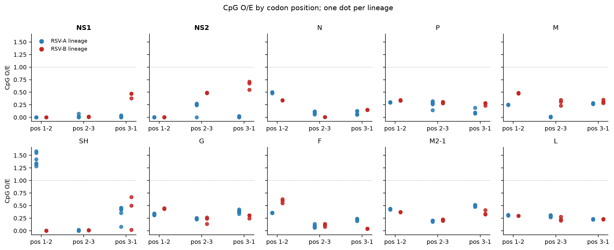
| 基因 | 位置 | RSV-A(6 條 lineage) | RSV-B(3 條 lineage) | 有沒有重疊 |
|---|---|---|---|---|
| NS1 | 1-2 | 0.00 | 0.00 | 兩邊都是零 |
| 2-3 | 0.00 – 0.07 | 0.01 – 0.02 | 兩邊都接近零 | |
| 3-1 | 0.00 – 0.04 | 0.38 – 0.47 | 完全不重疊 | |
| NS2 | 1-2 | 0.00 | 0.00 – 0.01 | 兩邊都接近零 |
| 2-3 | 0.00 – 0.28 | 0.48 – 0.49 | 完全不重疊 | |
| 3-1 | 0.00 – 0.02 | 0.55 – 0.71 | 完全不重疊 |
讀法:NS1 的差異全部落在「位置 3-1」,NS2 的落在「位置 2-3」和「位置 3-1」。這三處都是第 3 位字母可以自由改變的地方。氨基酸說了算的「位置 1-2」,兩個亞型都幾乎是零(RSV 的 NS1、NS2 幾乎不出現 Arg 的 CGN),沒有分別可言。
另外兩點要老實講。第一,其他基因並不是「A 全面較低」:M 的「位置 2-3」A 比 B 低(0.00–0.02 對 0.23–0.35),N 的「位置 2-3」方向相反,SH 在「位置 1-2」跟別人完全不同。所以沒有哪一類位置是「A 一律較低」。第二,RSV-A 內部也不一致:NS2 的 A.D.1 整條 lineage 幾乎沒有 CpG(O/E 0.004),另外五條 A lineage 在 0.1 左右,因此「A 的 NS2」不是一個單一數值。
GC3 和 ENC 也一併看過:NS1 的 GC3 是 A 0.27–0.29、B 0.24–0.25,ENC 兩邊都在 33–34 之間。密碼子用法整體上沒有不同,不同的只是 CpG。(M 基因的 ENC 差得多,A 36 對 B 43,但它的 CpG 沒有同樣的差別,可見這兩件事是分開的。)
上面的 O/E 依賴鹼基組成。更乾淨的做法是讓蛋白質完全不動:只看那些第 3 位有選擇的密碼子(同一個氨基酸有以 C 結尾的、也有不以 C 結尾的同義密碼子),問它們以 C 結尾的比例,在兩種情況下有沒有分別:
如果沒有任何力量壓制 CpG,兩個比例應該一樣,比值是 1。
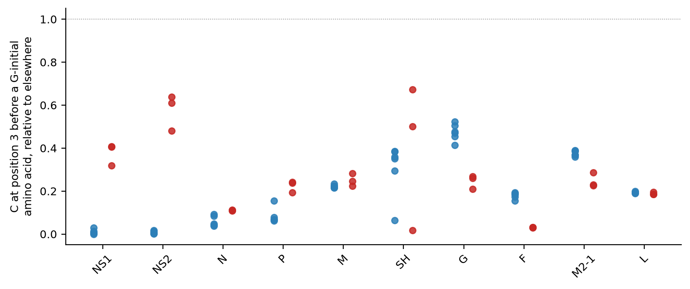
| 基因 | 亞型 | 下一個是 G 開頭時,以 C 結尾 | 其他情況,以 C 結尾 | 比值 |
|---|---|---|---|---|
| NS1 | A | 0.2% | 23.9% | 0.01 |
| B | 6.5% | 17.4% | 0.38 | |
| NS2 | A | 0.3% | 33.9% | 0.01 |
| B | 21.6% | 37.5% | 0.58 |
RSV-A 的 NS1:在「下一個必定是 G 開頭」的位置,只有 0.2% 的密碼子以 C 結尾,其他位置卻有 24%。氨基酸一個都沒有換,純粹是同義密碼子的選擇被推向避開 CpG。RSV-B 也在避開(0.38 對 1),只是沒有那麼徹底。
要注意的是,比值在幾乎所有基因、兩個亞型都低於 1(0.01–0.58),所以「迴避跨密碼子的 CpG」是 RSV 的普遍特徵;NS1/NS2 在 A 裡特別之處是迴避得多徹底。而且有兩個基因方向相反(F 和 G 在 B 裡的比值比 A 低),所以也不能說 A 處處更嚴格。
HyPhy 是一套專門做分子演化選擇分析的軟體。這裡用它的 SLAC 方法:先在每個基因的序列上建一棵演化樹,再沿著樹數出「同義變化」(不改氨基酸)和「非同義變化」(改了氨基酸),算出整個基因的 dN/dS(ω)。
為什麼這跟 CpG 有關?如果 A 和 B 的 NS1 受到的蛋白質限制很不一樣,CpG 的差異就可能只是蛋白質差異的副產品。ω 相近,則比較支持「是密碼子選擇的問題」。方法:每個基因每個亞型隨機抽 100 條(A+B 一起的樹則各 50 條),先在蛋白質層面對齊再還原成密碼子,用 IQ-TREE 建樹,再跑 SLAC。
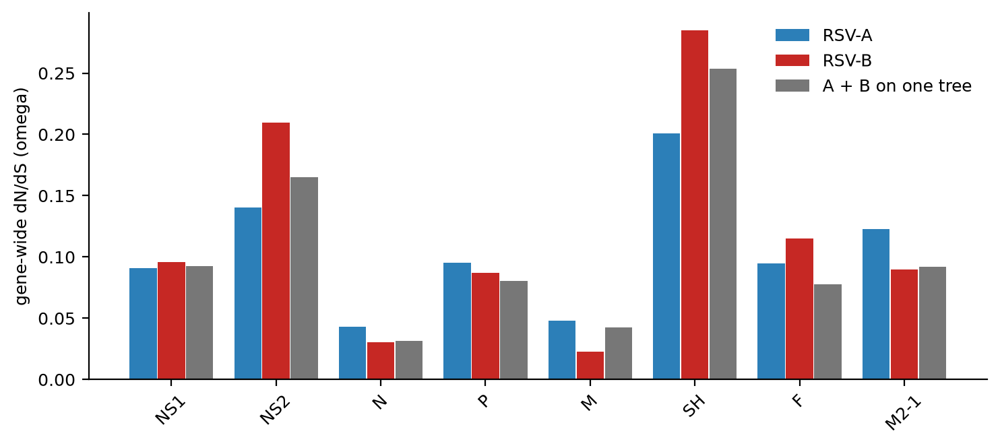
| 基因 | ω(A) | ω(B) | ω(A+B 一起) | A 的變化數(同義 / 非同義) |
|---|---|---|---|---|
| NS1 | 0.091 | 0.096 | 0.093 | 68 / 14 |
| NS2 | 0.141 | 0.209 | 0.165 | 75 / 24 |
| N | 0.043 | 0.031 | 0.031 | 213 / 19 |
| P | 0.095 | 0.087 | 0.080 | 156 / 32 |
| M | 0.048 | 0.023 | 0.042 | 177 / 22 |
| SH | 0.201 | 0.285 | 0.253 | 30 / 16 |
| F | 0.094 | 0.115 | 0.078 | 373 / 74 |
| M2-1 | 0.123 | 0.090 | 0.092 | 110 / 25 |
結論:NS1 的蛋白質在 A 和 B 受到同樣強度的保護,所以 CpG 的差距不能用「蛋白質限制不同」來解釋。NS2 在 B 稍為寬鬆(0.21 對 0.14),但兩邊都很低。
HyPhy 這一步的限制
同一個亞型之內的基因組是近親,所以每個基因只數到幾十個變化(上表最後一欄:NS1 只有 14 個非同義變化)。ω 因此不精確:足以說「兩邊都受強烈保護」,不足以分辨很小的差別。另外 SLAC 把整棵樹合起來算,它沒辦法告訴你 CpG 是在樹的哪一個分支上消失的。後者需要祖先序列重建,見第 34 節。HyPhy 還有別的方法(FEL、MEME 等找逐個位點的選擇),這次沒有用。
用第 30 節同一套分群穩健迴歸(results/slopes_by_gene.tsv),只看 NS1 和 NS2 的 CpG O/E 的 18 個斜率(9 條 lineage × 2 個基因)。
所以沒有 lineage 正在失去 CpG。這是 A 與 B 之間固定的差異,不是還在進行的趨勢。這個結果直接回答了第 32 節最後提出的「是不是還在下降」:不是。
| 問題 | 答案 |
|---|---|
| RSV 有非人類宿主嗎? | 沒有。33,040 條全是 Human。 |
| RSV-A 的 NS1/NS2 的 CpG 缺在哪裡? | 缺在同義位置:NS1 在跨密碼子的「位置 3-1」,NS2 在「位置 2-3」和「3-1」。氨基酸決定的「位置 1-2」兩個亞型都是零。 |
| 是蛋白質造成的嗎? | 可能性低。NS1 的 ω 是 0.091(A)對 0.096(B);固定氨基酸之後,A 幾乎從不在 G 開頭的氨基酸前面用 C 結尾(比值 0.01 對 0.38)。 |
| 還在變化嗎? | 沒有。沒有 lineage 的 NS1/NS2 CpG 在下降。 |
這一輪證明了什麼、沒證明什麼
證明了:CpG 的缺失集中在不影響蛋白質的位置,而且蛋白質本身受的限制在 A 和 B 之間一樣。這跟「RNA 層面的選擇壓力」吻合。
沒有證明:這是 ZAP 之類的抗病毒壓力造成的。突變偏好或祖先留下來的密碼子用法,在一張「快照」裡看起來會一模一樣。RNA 病毒的突變本身就傾向 C→U(這會自然減少 CpG),所以單看「CpG 少」不能直接證明有選擇。要區分,需要有樹:知道 CpG 是在哪一個分支、什麼時候消失的,以及那個分支上有沒有一次「集中去除 CpG 的同義變化」。
另外,樣本是每條 lineage 抽 250 條,不是全部基因組;而且只有 6 條 A 和 3 條 B。
值得知道:這一輪帶來的新概念
選項一至三是原本的清單(第三項已完成),四、五是跟導師討論之後新增的。
自 2023 年起,nirsevimab 在整個人口層面給嬰兒使用,史上第一次對 F 蛋白施加了刻意的免疫壓力。抗藥性有沒有出現,是現在多個監測團隊正在發表的、活躍而未解決的問題。
本項目已經具備條件。數據橫跨 2015 至 2026 年,涵蓋推行前後,而流程已經能正確切出 F 基因。我們確認過它能可靠讀出相關的抗體結合位置,而且兩個亞型的「正常」氨基酸剛好如文獻所述不同:RSV-A 在第 201 位是 K,RSV-B 是 N —— 這正是兩個亞型需要留意的突變不一樣的原因。
分析內容是:追蹤已知抗藥性相關取代在推行前後、按年份和亞型的頻率。無論結果如何都很可能可以報告:發現沒有上升本身就是一個監測結果(已有數個團隊發表過),而發現有上升則意義重大。
如上所述做一次系統性文獻搜尋。半天時間,而它決定了現有結果值不值得繼續發展。
這一項已經在第 33 節做完。方法跟原先設想的「固定氨基酸、打亂同義密碼子」的 Monte Carlo 虛無模型不同,改用了更直接的「固定氨基酸之後比較以 C 結尾的比例」,再加上 HyPhy 的 dN/dS。結果:缺失集中在同義位置,蛋白質的限制在 A 和 B 之間一樣。
第 33 節的結論停在「吻合 RNA 層面的壓力」,因為快照分不出選擇和突變偏好。下一步是把 RSV-A 與 RSV-B 放在同一棵 NS1/NS2 的樹上,重建每個內部節點的祖先序列,逐個分支數兩樣東西:製造 CpG 的同義變化和消除 CpG 的同義變化。如果 CpG 的消失是被選擇推動的,應該能在某些分支看到「消除多過製造」,多過突變偏好預期的量;如果只是突變偏好,各分支的比例會跟整體的突變譜一致。這一步工作量比較大(約一至兩週),而且有可能得出不明確的結果。
RSV 的趨勢是否定結果,而且沒有宿主資訊,所以導師建議換其他病毒,直接用現有流程(每個 lineage 內做時間趨勢)看有沒有有趣的故事,有的話就沿著那個病毒做下去。GISAID 頁面上有這些資料庫:
| GISAID 分頁 | 病毒 | 宿主有變化嗎? | 備註 |
|---|---|---|---|
| EpiFlu | 流感 | 有:鳥、牛、其他哺乳類(H5N1) | 論文研究的就是流感,所以新意較低;但 H5N1 的牛和哺乳類資料是最近的「宿主轉換」,可以拿來驗證。 |
| hCoV-19 | SARS-CoV-2 | 有:人、貂、鹿 | 資料量極大,非人類宿主的部分很少。 |
| EpiRSV | RSV | 沒有,全是人 | 本項目已完成。 |
| EpiPox | 猴痘(mpox) | 幾乎全是人 | DNA 病毒,突變受宿主的 APOBEC3 酶主導,機制跟 RNA 病毒的 CpG 不同,論文的方法不能直接套用。動物宿主樣本少,且常來自單一研究。 |
| EpiArbo | 蟲媒病毒(由蚊傳播) | 有,但要經過蚊子 | 導師說要避開:兩個宿主交替,成分會受蚊子宿主影響,混淆很大。 |
| EpiNiV | Nipah 病毒 | 有:蝙蝠(源頭)、豬、人 | 屬副黏液病毒,跟 RSV 同一個大家族;宿主轉換是真正的零星事件,值得看。資料量可能很少,要先確認基因組數目。 |
先做的事是可行性評估:下載每個候選的 host、日期、lineage 欄位,數一數非人類宿主有多少條序列、涵蓋多長時間。條件不夠的(例如只有十幾條基因組)就不用做。
值得知道:換一個病毒,現有的流程需要什麼
本指南用到的所有專業名詞。
| English | 中文 | 說明 |
|---|---|---|
| Alignment | 序列比對 | 把多條序列排列對齊,令相對應的位置互相對上,好讓你在不同基因組裡找到同一個基因。 |
| Ambiguous base | 模糊鹼基 | 定序無法判定字母的位置,寫作 N。 |
| Amino acid | 氨基酸 | 組成蛋白質的建築材料。 |
| Bronchiolitis | 細支氣管炎 | 小氣道發炎,RSV 在嬰兒身上的嚴重表現。 |
| Codon | 密碼子 | 編碼區中的三個字母一組,指定一個氨基酸。 |
| Confidence interval | 信賴區間 | 與數據相符的估計值範圍。95% 區間若包含零,就不能排除沒有效應。 |
| Confounder | 混淆因子 | 與比較的兩者一同變動的第三個因素,會造出並不存在的關聯。 |
| Covariate | 共變量 | 加進統計模型以固定其影響的變數。 |
| CpG | CpG 二核苷酸 | 一個 C 緊接一個 G。抗病毒蛋白 ZAP 辨識的標記。 |
| Dinucleotide | 二核苷酸 | 序列中任何相鄰的一對字母。 |
| Envelope | 包膜 | 病毒顆粒的外層油脂膜,取自上一個宿主細胞。 |
| FASTA | FASTA 格式 | 儲存序列的標準文字格式:一行以 > 開頭的標題,然後是字母。 |
| GC content | GC 含量 | 序列中屬於 G 或 C 的字母比例。 |
| GC3 / GC12 | 第三位 / 第一二位 GC 含量 | 密碼子第三位置對比第一、二位置的 GC 含量。比較兩者可區分作用於 RNA 與作用於蛋白質的壓力。 |
| Gene | 基因 | 編碼一種蛋白質的一段基因組。RSV 有十個。 |
| Genome | 基因組 | 一個生物體的全套遺傳指令。 |
| GISAID | GISAID 資料庫 | 本項目使用的國際病毒序列資料庫,其條款限制轉發。 |
| Interferon | 干擾素 | 細胞偵測到病毒時釋放的警報訊號。RSV 的 NS1 和 NS2 蛋白會壓制它。 |
| Lineage | 譜系 | 病毒家族樹上一條有名字的分支。標籤是階層式的,例如 A.D.1.5。 |
| MAFFT | MAFFT 軟體 | 本項目用來把序列對齊到參考基因組的軟體。 |
| Monoclonal antibody | 單株抗體 | 實驗室製造的單一種抗體,可直接注射提供保護。 |
| NCBI | NCBI 資料庫 | 美國的公開序列資料庫。與 GISAID 不同,它沒有轉發限制,所以參考基因組取自這裡。 |
| Nirsevimab | 尼塞維單抗 | 2023 年起使用的長效單株抗體,給嬰兒預防重症 RSV,靶點是 F 蛋白。 |
| Non-synonymous | 非同義 | 會改變所編碼蛋白質的變異。 |
| Nucleocapsid | 核衣殼 | 病毒基因組連同包裹它的蛋白質。 |
| O/E ratio | 實際/期望比值 | 實際值除以期望值。某二核苷酸實際出現的頻率,除以機率所預測的。低於 1 代表被壓抑。 |
| Paramyxovirus | 副黏液病毒 | 包含 RSV、麻疹、腮腺炎、Nipah 和 Hendra 的病毒家族。 |
| p-value | p 值 | 若其實沒有效應,出現這麼強規律的機率。樣本極大時會失去參考價值。 |
| Quality control | 品質控制 | 分析前剔除不完整或不可靠序列的過濾步驟。 |
| Reference genome | 參考基因組 | 一條已標註好基因位置、研究透徹的基因組,用作在其他基因組中定位基因的地圖。 |
| Regression | 迴歸 | 在數據中擬合一條直線,估計一個量如何隨另一個量改變。 |
| RSV | 呼吸道合胞病毒 | Respiratory Syncytial Virus,分 A、B 兩個亞型。 |
| R squared | 決定係數 | 擬合線解釋了數據中多少散佈,由 0 到 1。 |
| Seasonality | 季節性 | 一年之內有規律的高低起伏。 |
| Simpson's paradox | 辛普森悖論 | 合併數據中的趨勢,在分成真正的組別後消失或反轉。 |
| Slope | 斜率 | 迴歸估計出來的變化率,本項目以「每年」為單位。 |
| Sporadic transmission | 零星傳播 | 病毒感染新宿主物種幾次後消失,未能建立傳播鏈。 |
| Subtype | 亞型 | 病毒物種內的主要分支。RSV 分 A 和 B。 |
| Surveillance data | 監測數據 | 由日常公共衛生監測累積而來的數據,並非為研究而設計的樣本。 |
| Sustained transmission | 持續傳播 | 病毒在某個宿主物種中立足並持續流行多年。 |
| Synonymous | 同義 | 不改變所編碼蛋白質的序列變異。 |
| Syncytium | 合胞體 | 受感染細胞融合而成的多核團塊。RSV 的名字由此而來。 |
| UpA (TpA) | UpA 二核苷酸 | 一個 U(或 T)後面接一個 A。除 CpG 外唯一有實驗證據會壓制 RNA 病毒複製的 motif,走的是另一條辨識路徑。論文沒有用它,本項目保留它作為對比:RSV 的 CpG O/E 只有 0.24,UpA 卻有 0.90,顯示壓力是 CpG 專有的。 |
| Cliff's delta | Cliff 效應量 | 兩組分佈分離得多徹底,範圍 −1 到 +1。樣本數大到 p 值失效時用它代替。0 = 完全重疊,±1 = 完全不重疊。 |
| Effect size | 效應量 | 差異「有多大」的指標,相對於 p 值的「是不是巧合」。樣本數越大,p 值越沒用,效應量越重要。 |
| ENC | 有效密碼子數 | Effective number of codons。20 = 每種氨基酸只用一個密碼子,61 = 所有密碼子均勻使用。量度整體的密碼子偏好。 |
| dN/dS (ω) | 非同義對同義變化比 | 非同義變化率除以同義變化率。遠低於 1 代表蛋白質受到純化選擇保護,約 1 代表不受限制,大於 1 代表正選擇。 |
| HyPhy | HyPhy 軟體 | 做分子演化選擇分析的軟體。本項目用它的 SLAC 方法算整個基因的 dN/dS。 |
| Purifying selection | 純化選擇 | 淘汰會破壞功能的變異,令蛋白質保持不變。ω 低就是它的特徵。 |
| Codon-pair bias | 密碼子對偏好 | 密碼子的選擇受相鄰密碼子影響。跨密碼子的 CpG(前一個結尾 C、後一個開頭 G)是其中一種。 |
| Host | 宿主 | 病毒寄居的生物。GISAID 的 Host 欄位記錄序列來自哪一種。 |
| ZAP | 鋅指抗病毒蛋白 | Zinc-finger antiviral protein。人類蛋白,結合病毒 RNA 的 CpG 位點並標記它銷毀。 |